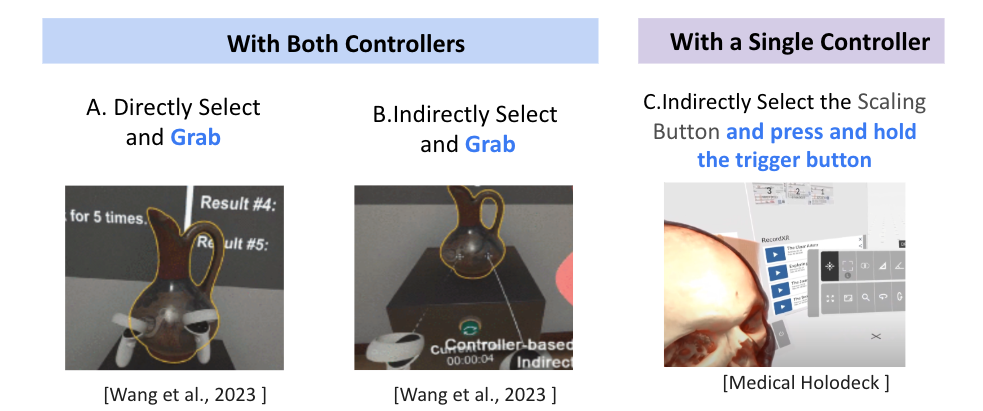
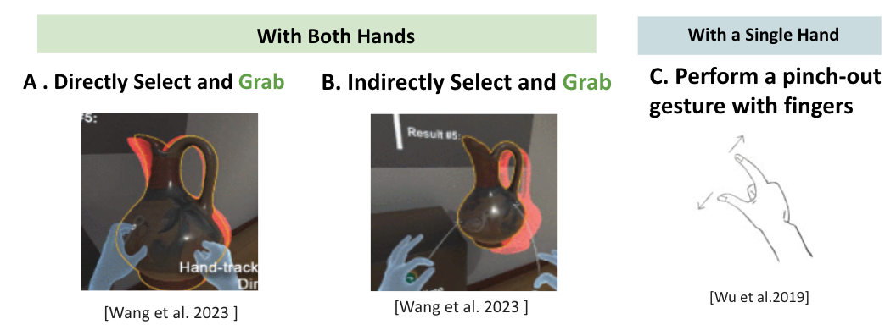
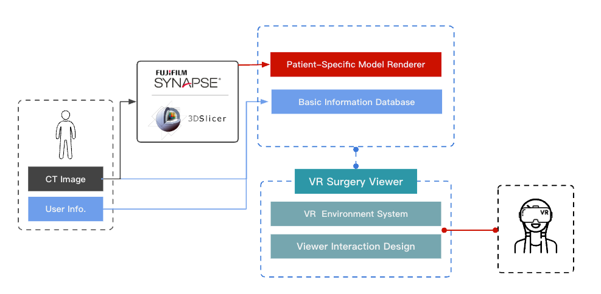
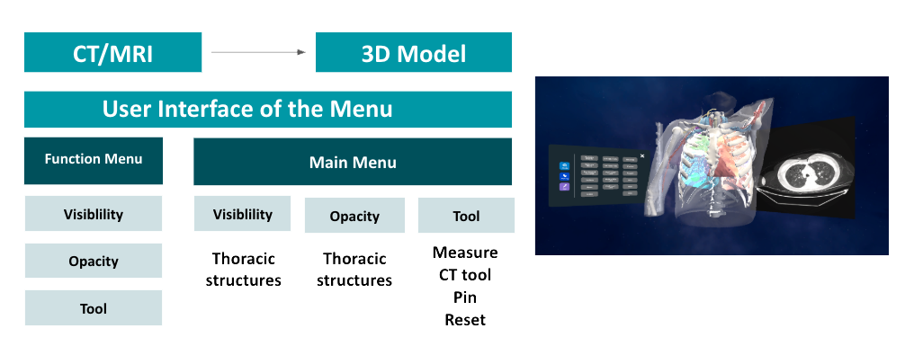
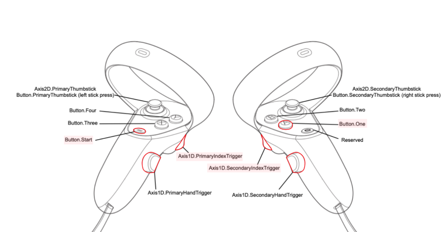
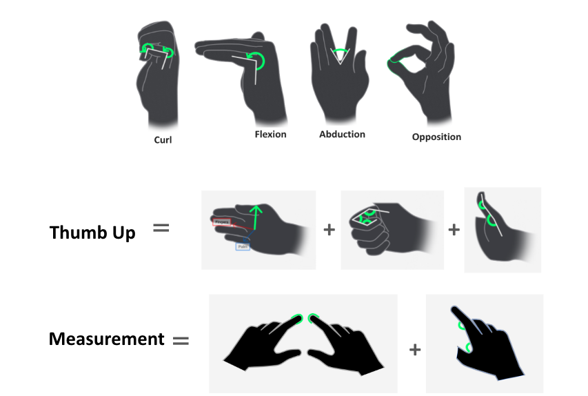
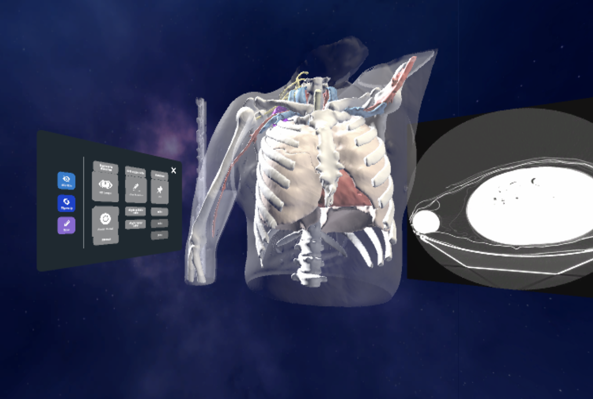
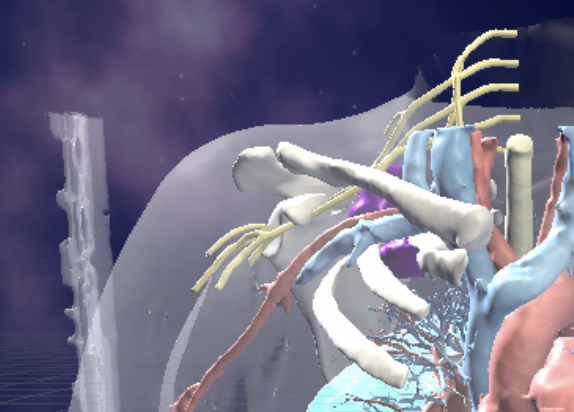
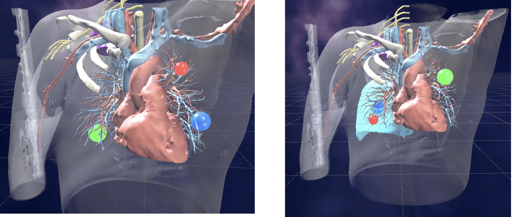

雙模態 VR 解剖系統 Dual-Modal VR Anatomy System
以真實患者 CT 資料重建胸腔 3D 解剖模型，設計雙模態互動與三種醫療專屬工具，提升外科解剖教學的空間理解與學習效率。 Reconstructed 3D thoracic anatomy models from real patient CT data, designed dual-modal interactions and three medical-specific tools to enhance spatial comprehension and learning efficiency in surgical anatomy education.
System Dev
Design Context
傳統外科解剖教學依賴屍體解剖、實體模型或 2D 教科書圖片。對胸腔外科手術規劃而言，需要精確理解器官、病灶與血管之間的三維空間關係——這是 2D 媒介難以傳達的。
Traditional surgical anatomy education relies on cadavers, physical models, or 2D textbook illustrations. For thoracic surgical planning, surgeons need to precisely understand 3D spatial relationships between organs, lesions, and vessels — something 2D media struggles to convey.
這個研究專案探索 VR 如何填補這個缺口：從真實患者 CT 資料重建胸腔 3D 解剖模型，設計兩套完整的輸入模態，以及三種醫療情境專屬工具，以提升解剖學習的空間理解與互動效率。
This research project explores how VR can bridge that gap: reconstructing 3D thoracic anatomy models from real patient CT data, designing two complete input modalities, and building three medical-specific tools to enhance spatial comprehension and interaction efficiency in anatomy learning.
Challenges
- 雙模態一致性：控制器與手勢的操作直覺不同，如何讓兩套系統完整支援所有功能，同時保持邏輯一致。
- 手勢精準度：測量工具需要高度空間精準度，但手勢偵測本身存在不確定性，影響量測結果的可靠性。
- 3D 空間 UI：選單與工具在三維空間中運作，需避免遮擋解剖模型，同時維持使用者視線的自然流動。
- Dual-modal consistency: Controller and gesture have different operational instincts — both need to support all features while keeping the usage logic coherent.
- Gesture precision: Measurement tools require high spatial accuracy, but gesture detection introduces variability that affects measurement reliability.
- 3D spatial UI: Menus and tools operate in 3D space — they must not occlude the anatomy model while keeping the user's gaze flow natural.
What I Did
- 以真實患者 CT 資料建立胸腔三維解剖模型，整合至 Unity VR 環境
- 設計並實作控制器模態：直接 / 間接選取、位移旋轉、縮放操作
- 設計並實作手勢模態：捏合選取、捏持抓取、拇指上揚呼叫選單、雙食指量測
- 設計三種醫療專屬工具：CT Viewer、測量工具、材質替換工具（透明度調整）
- 設計 3D 空間選單 UI 與互動流程
- 規劃並執行使用者測試：任務測試（完成時間、準確率、錯誤次數）+ SUS + USEQ + 訪談
- Reconstructed 3D thoracic anatomy models from real patient CT data and integrated into Unity VR
- Designed and implemented controller modality: direct/indirect selection, translation/rotation, scaling
- Designed and implemented hand gesture modality: pinch-select, pinch-hold-grab, thumb-up menu summon, dual-index measurement
- Designed three medical-specific tools: CT Viewer, Measurement Tool, Model Material Replacement (opacity control)
- Designed 3D spatial menu UI and interaction flows
- Planned and conducted user testing: task-based tests (completion time, accuracy, error count) + SUS + USEQ + interviews
Research
研究分為兩個方向：以手把控制器為基礎的 VR 互動，以及以手勢辨識為基礎的 VR 互動——分析現有 VR 應用中兩種模態的常見互動方式，作為設計的基礎參考。
Research covers two directions: controller-based VR interaction and hand gesture-based VR interaction — analyzing common interaction patterns in existing VR applications as the foundational reference for design.
手把控制器提供明確的按鍵回饋與可預測的精準操作
Hand-held controllers deliver explicit button feedback and predictable precise manipulation
- 位移與旋轉：移動控制器同時改變物件的位置與方向，一個動作完成兩種操作。
- 縮放：沿特定軸移動控制器，調整物件大小。
- Translation and Rotation: Moving the controller simultaneously changes the object's position and orientation — two operations in one gesture.
- Scaling: Moving controllers along a specific axis adjusts the object's size.

手勢互動直覺自然，但量測等高精準度任務面臨穩定性挑戰
Hand gestures feel intuitive and natural, but precision-critical tasks face stability challenges
- 位移與旋轉：移動手部同時改變物件位置與方向，操作邏輯與控制器一致，降低學習成本。
- 縮放：雙手各捏持物件，展開或收合以調整大小。
- Translation and Rotation: Moving the hand simultaneously changes position and orientation — same logic as controllers, minimizing the learning curve.
- Scaling: Pinch-hold the object with both hands and expand or contract to adjust size.

Design Process
設計分三個層次：系統整體架構、輸入對映規格（控制器 / 手勢），以及三種互動情境（3D 物件操作、選單互動、專屬工具）。兩種輸入模態並行設計，確保功能覆蓋完整且邏輯一致。
Design covers three levels: overall system architecture, input mapping specifications (controller / gesture), and three interaction contexts (3D object manipulation, menu interaction, specialized tools). Both modalities were designed in parallel to ensure full feature coverage and consistent logic.
以患者 CT 為起點，VR 環境整合解剖模型與互動工具
Starting from patient CT data, the VR environment integrates anatomy models with interactive tools


控制器與手勢各有六個對應操作，邏輯保持一致
Six mapped operations across both modalities — consistent underlying logic
控制器按鍵對映 Controller Button Mapper
- Direct Selection: 將控制器靠近目標物件。Move the controller close to the desired object.
- Indirect Selection: 以射線瞄準目標物件。Aim the ray at the desired object.
- Trigger: PrimaryIndexTrigger or SecondaryIndexTrigger.
- Grab: PrimaryHandTrigger or SecondaryHandTrigger.
- Menu: Button.Start.
- Measurement: Button.One.

手勢對映 Hand Gestures
- Direct Selection: 將手靠近目標物件。Move the hand close to the desired object.
- Indirect Selection: 以射線（僅顯示點）瞄準目標物件。Aim the ray indicator (points only, no line) at the desired object.
- Trigger: 對選取物件After selecting, pinch and then release.
- Grab: 對選取物件After selecting, pinch and hold.
- Bring up Menu: 左手做Left hand thumb up 手勢。gesture.
- Measurement: Touch index fingers together 開始量測，移動食指繪製線段。to start; move index fingers to draw the measurement line.

兩種模態平行設計，支援相同的位移、旋轉、縮放操作
Both modalities designed in parallel, supporting identical translate, rotate, and scale operations
Translation & Rotation
控制器：直接選取並抓取
Controller: Direct Select and Grab
Translation & Rotation
手勢：直接選取並捏持
Gesture: Direct Select and Pinch-Hold
Scaling
控制器：雙手直接選取並抓取
Controller: Direct Select and Grab with both controllers
Scaling
手勢：雙手直接選取並捏持
Gesture: Direct Select and Pinch-Hold with both hands
3D 空間選單可自由呼叫與重新定位，避免遮擋解剖視野
3D spatial menu: freely summoned and repositioned to avoid occluding the anatomy view
Bring Up Menu
按左控制器選單鍵呼叫選單。
Press the menu button on the left controller.
Reposition Menu
選取面板邊緣並抓取以移動位置。
Select the panel edge and grab to reposition.
Press Buttons
直接或間接選取後觸發，兩種方式皆可。
Directly or Indirectly Select and Trigger — both work.
Bring Up Menu
左手拇指朝上手勢呼叫選單。
Left hand thumb-up gesture to summon menu.
Reposition Menu
選取面板邊緣並捏持以移動位置。
Select the panel edge and pinch-hold to reposition.
Press Buttons
直接或間接選取後觸發，兩種方式皆可。
Directly or Indirectly Select and Trigger — both work.
三種醫療情境專屬工具，對應解剖學習的核心需求
Three medical-specific tools addressing the core needs of anatomy learning
Measurement Tool
按測量鍵，移動控制器拉出線段取得數值，放開完成。
Press the measurement button, move the controller to draw the line, release to complete.
CT Viewer Tool
抓取紅色面板，垂直移動控制器以瀏覽對應 CT 切片。
Grab the red panel and move the controller vertically to browse CT slices.
Material Replacement Tool
間接或直接選取按鈕，切換模型材質（透明度調整）。
Indirectly or directly select the button to change model material (opacity).
Measurement Tool
雙食指觸碰開始量測，以右手觸發完成。
Touch index fingers together to start; trigger with right hand to complete.
CT Viewer Tool
抓取紅色面板，垂直移動手部以瀏覽對應 CT 切片。
Grab the red panel and move the hand vertically to browse CT slices.
Material Replacement Tool
間接或直接選取按鈕，切換模型材質（透明度調整）。
Indirectly or directly select the button to change model material (opacity).
Results
採用量化與質性並行的結構化使用者測試，評估系統的易用性與學習支援效果。
A structured user testing process combining quantitative and qualitative methods evaluated the system's usability and learning support effectiveness.
設計與學習目標對應的核心任務：病灶位置辨識、距離量測、特定操作完成。受測者在 VR 環境中執行任務，收集三項量化指標作為設計合理性的評估依據。
Designed core tasks aligned with learning objectives: identifying lesion locations, measuring distances, and completing specific operations. Participants performed tasks in VR; three quantitative metrics collected as design validity indicators.

任務一：病灶位置辨識 Task 1: Identifying Lesion Locations

任務二：距離量測 Task 2: Measuring Distances

任務三：完成特定操作 Task 3: Completing Specific Operations
使用 System Usability Scale（SUS）與 USEQ 量化受測者對介面與體驗的主觀感受。測後訪談進一步了解使用者情緒、遭遇困難與改善建議，為後續迭代提供質性依據。兩種輸入方式均獲得正面評價，手勢互動直覺感良好，但量測準確度仍有改善空間。
Used the System Usability Scale (SUS) and USEQ to quantify subjective impressions of the interface and experience. Post-test interviews gathered qualitative insights on user emotions, challenges, and improvement suggestions. Both input modalities received positive evaluations; gesture interaction scored well on intuitiveness, but measurement accuracy still has room for improvement.
Reflection
這個專案讓我看到 VR 在醫學教育中的真實潛力——不是作為噱頭，而是作為讓空間關係變得可操作、可量測、可反覆確認的工具。
This project revealed VR's genuine potential in medical education — not as a novelty, but as a tool that makes spatial relationships manipulable, measurable, and repeatedly confirmable.
兩種輸入模態的並行設計，讓我深刻體會「同樣的功能，不同的互動直覺」所帶來的設計複雜度。控制器提供明確的按鍵回饋與精準操作；手勢天然直覺，但在需要精確空間定位（如量測）的情境下，穩定性是真正的挑戰。
Designing two input modalities in parallel gave me deep appreciation for the design complexity of "same function, different interaction instinct." Controllers offer explicit button feedback and precise manipulation; gestures feel naturally intuitive, but in contexts requiring precise spatial positioning — like measurement — stability is the real challenge.
兩種方式均獲正面評價，但「自然感」與「精準度」有時不是同一件事——這個差異本身就是一個有意義的設計發現，也指出了下一步需要解決的核心問題。
Both modalities received positive evaluations, but "natural feel" and "precision" are sometimes not the same thing — this divergence is itself a meaningful design finding, and points directly to the core problem to solve next.
Key Takeaways
- VR 讓傳統 2D 解剖教材無法傳達的空間關係變得可操作——這是最核心的設計價值
- 雙模態並行設計需要在「邏輯一致」與「符合各自模態的自然操作直覺」之間找到平衡
- 手勢對「感受類」互動（物件操作、選單）效果好，但對「精準類」互動（量測）仍需額外設計輔助
- SUS + USEQ + 訪談的三角評量，比單一量表更能捕捉使用者體驗的全貌
- VR makes spatial relationships — impossible to convey in 2D anatomy materials — directly manipulable: this is the core design value
- Dual-modal parallel design requires balancing "consistent logic" with "natural fit for each modality's instinct"
- Gestures work well for "feel-based" interactions (object manipulation, menus), but precision-critical interactions (measurement) still need supplementary design support
- The SUS + USEQ + interview triangulation captures the full picture of user experience better than any single scale
下一步 What's Next
針對量測精準度設計輔助視覺提示或重新設計手勢；允許單獨操作胸腔各部位結構；加入專家引導課程與可重播的學習單元，讓系統更完整地支援自主學習。
Design assistive visual cues or redesign gestures to improve measurement precision; enable separate manipulation of individual thoracic structures; add expert-guided sessions and replayable lessons to fully support self-directed learning.